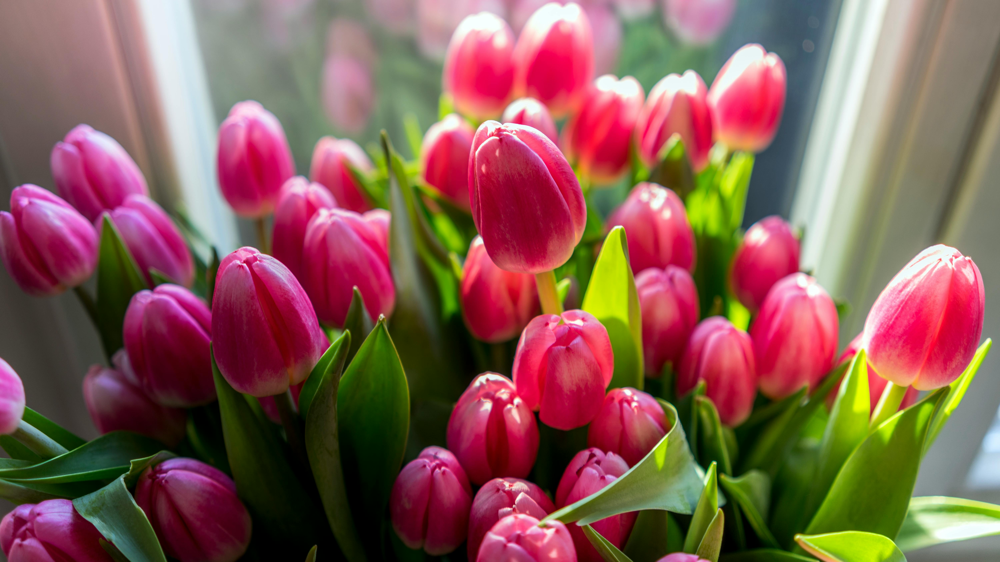
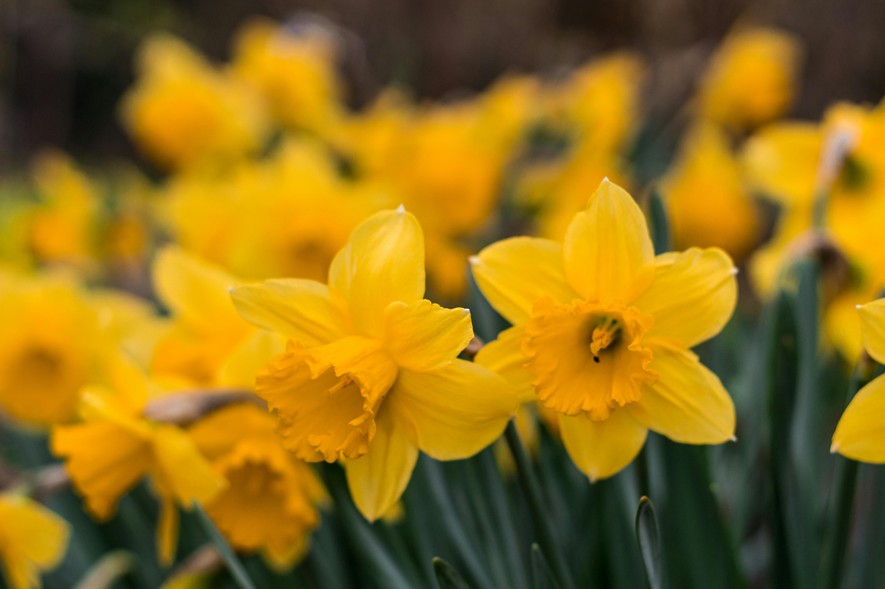
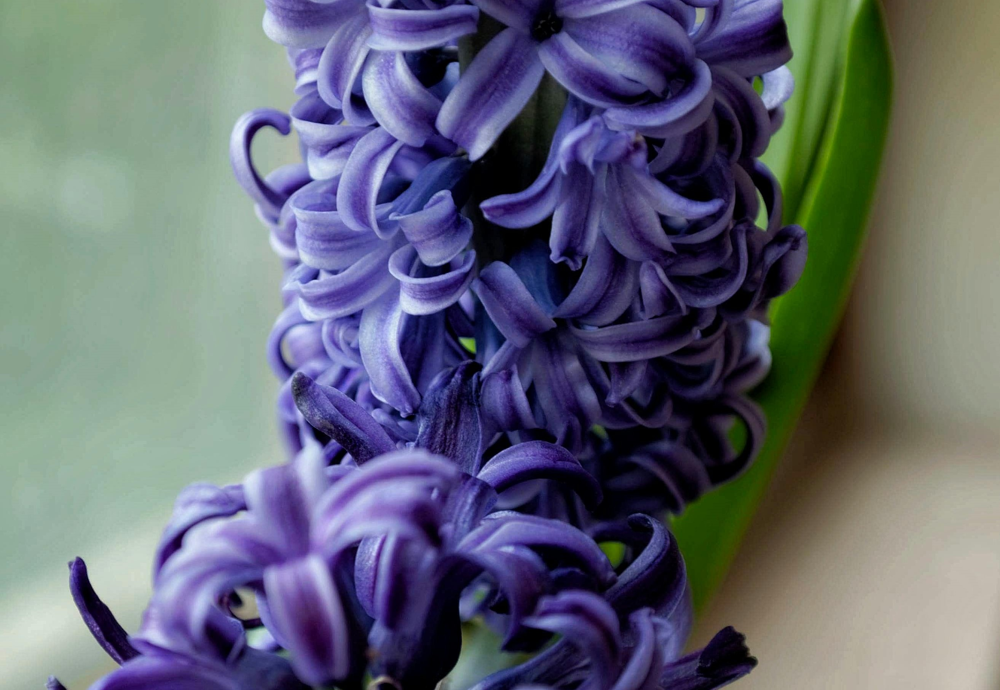
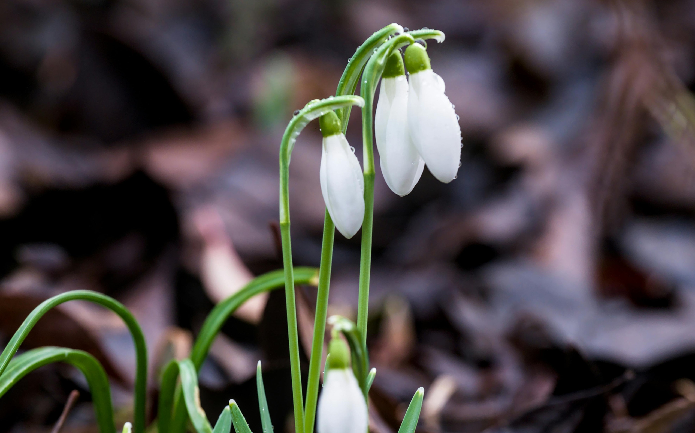
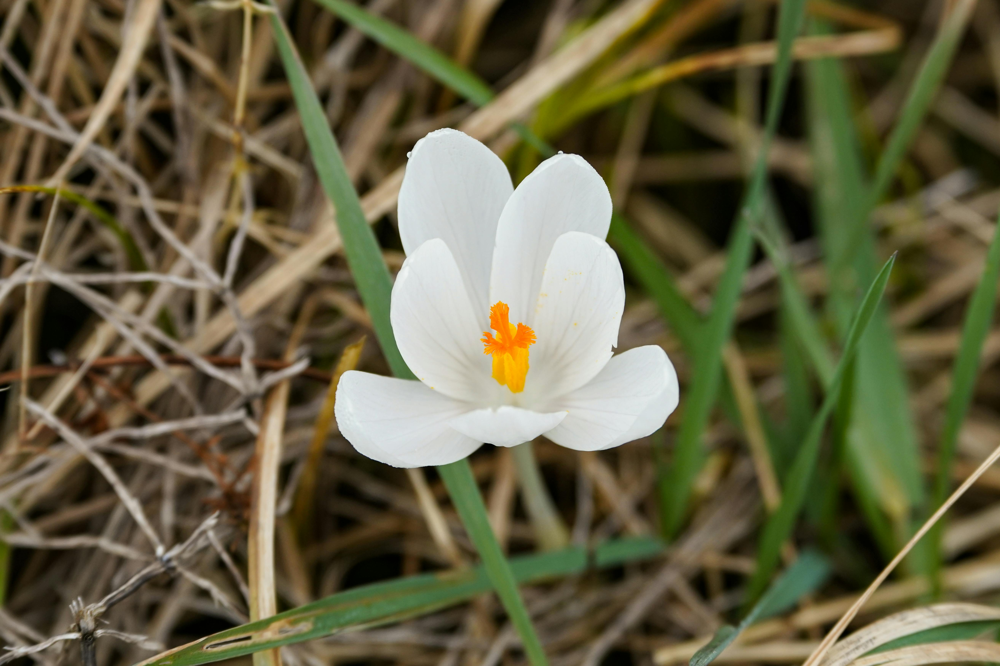
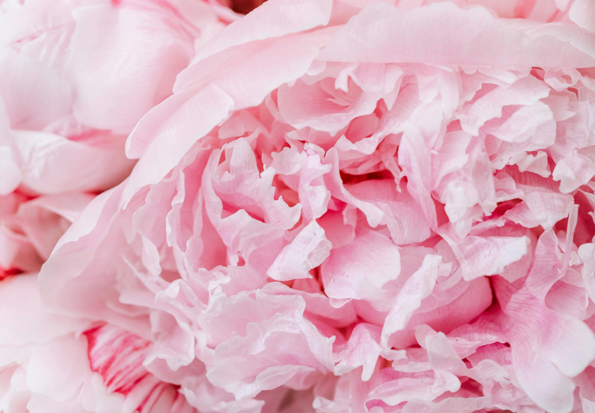

Весняні квіти
Тюльпани

Тюльпани - одні з найвідоміших весняних квітів, які бувають різних кольорів і форм. Вони символізують любов і гармонію. Відомо понад 100 видів тюльпанів, кожен з яких має свої унікальні особливості. Їх культивація почалася ще в Османській імперії, і сьогодні вони є невід'ємною частиною весняних садів по всьому світу. Вони бувають червоні, жовті, рожеві, білі, фіолетові та навіть чорні.
Тюльпан — трав'янистий цибулинний багаторічник. Висота рослин коливається залежно від виду і сорту від 10-20 до 65-100 см.
Коренева система складається із щорічно відмираючого додаткового коріння, розташованого на підковоподібній нижній частині донця. У молодих цибулин (до першого цвітіння) формуються столони — порожнисті структури, на дні яких розташована дочірня цибулина. Зазвичай столони ростуть вертикально вниз, рідше вбік. Стебло представлене трьома формами: денце, столон і генеративний пагін, що несе квітки і листя. Стебло прямостояче, циліндричне, заввишки від 5-20 до 85-100 см
Листки подовжено-ланцетні, зелені або сизуваті, з гладкими або хвилястими краями і легким восковим нальотом. Жилкування дугове. Нижній листок найбільший, верхній, так званий прапор-лист — найменший. У тюльпанів Кауфмана, Грейга, Tulipa micheliana та їхніх садових форм верхній бік листя прикрашений фіолетово-бурими, пурпуровими цятками або штрихами, смугами, що надає рослинам особливу декоративність. У дорослої квітучої рослини зазвичай 2-4(5) листів, які розташовані в нижній частині стебла. У молодих рослин (до першого цвітіння) єдиний лист розвивається до кінця вегетації. Зачатки листя закладаються в заміщуваній цибулині дорослої рослини в період вегетації, а зростання триває в наступному сезоні.
Квітка зазвичай одна, але є багатоквіткові види (Tulipa praenstas, Tulipa turkestanica) і сорти від них, на квітконосі яких 3-5 квіток і більше. Квітка правильна, двостатева, оцвітина з шести вільних листочків, тичинок шість, з подовженими пиляками; товкачик з верхньою тригнізною зав'яззю, коротким стовпчиком і трилопатевим рильцем. Квітки видових тюльпанів частіше червоні, жовті, рідше білі. Забарвлення сортових тюльпанів найрізноманітніше: від чисто-білої, жовтої, червоної, пурпурової, фіолетової і майже чорної до поєднання двох, трьох або декількох барв. Часто основа пелюсток забарвлена в інший колір, що відрізняється від основного, що утворює так зване «дно» квітки. Форма квітки теж різноманітна: келихоподібна, чашоподібна, овальна, лілієподібна, махрова (піоноподібна), бахромова, зірчаста. Квітки великі, завдовжки до 12 см, діаметром від 3 до 10 см, а в повному розкритті у видових тюльпанів до 20 см. Квітки тюльпанів широко розкриваються на сонці і закриваються вночі і в похмуру погоду.
Плід — багатонасінна тригранна коробочка. Насіння плоске, трикутне, коричнево-жовте, розташоване горизонтально у два ряди в кожному гнізді коробочки.

Значення кольорів:
- Червоний - це колір палкої пристрасті, глибокого обожнювання та вогняної любові. Це відтінок, який вбирає в себе всю силу гарячих почуттів, сповнених вдячності та безмежної подяки. Представте собі квітучі червоні троянди, які символізують відданість і страсті, які відчуваєте.
- Рожевий же, навпаки, розмовляє про ніжність, закоханість, легкість флірту та безмежне щастя. Скористайтеся насиченістю відтінку, щоб передати інтенсивність своїх емоцій. Рожеві квіти, ніби натхненні весняним ранком, щедро дарують свою ніжність і радість.
- Жовтий тюльпан - це не лише символ розлуки. Це квітка, що несе в собі бажання щасливого життя, багатства, достатку та міцного здоров'я. Даруйте жовті квіти тим, кого ви шануєте і цінуєте, і ваш подарунок обов'язково зігріє їх серця і принесе радість.
- >Бузковий колір - це колір трепетних почуттів і безмежної прихильності. Букет бузкових тюльпанів стане найкращим подарунком для молодої дівчини, коханої подруги, нареченої або дружини, нагадуючи про вашу ніжність і турботу.
- А білий - це колір чистої, щирих почуттів кохання, вдячності, ніжності й поваги. Це універсальний колір, який підійде жінкам будь-якого віку, символізуючи чистоту і вірність ваших почуттів.
Нарциси

Нарциси символізують відродження та нові починання. Вони яскраво жовтого кольору, але також можуть бути білими. Нарциси є одними з перших квітів, що цвітуть навесні, і додають радості після зимового холоду. Їхні квіти мають трубчасту форму і виділяються своєю яскравістю серед весняної природи. Крім своєї краси, нарциси також мають лікувальні властивості.
Нарцис — рід однодольних рослин з родини амарилісових.
Багато століть нарцис — витончена ніжна квітка з тонким стеблом і вишуканим ароматом-вважається символом краси.
З його походженням пов'язана поетична легенда про красивого юнака Нарциса, який закохався в себе, побачивши своє відображення у воді, загинув від цієї любові і був перетворений богами в прекрасну квітку, що носить з тих пір його ім'я.
Протягом тисячоліть люди не тільки милувалися красою Нарциса, але і хотіли зробити його ще прекрасніше і, треба віддати їм належне, значно досягли успіху в цьому.
Над створенням понад 12 тисяч сортів нарцисів, внесених зараз в міжнародний регістр, працювали близько 900 селекціонерів в більш ніж 15 країнах світу.
Нарциси з'являються в саду рано, одними з перших, разом із гіацинтами, крокусами і тюльпанами. Сама собою квітка невередлива, але лінивцям краще з нею не зв'язуватися, бо тільки відповідальний квітникар може виростити нарцис таким, яким той має бути. Дуже важливо вибрати для посадки нарцисів відповідну ділянку: вона повинна бути добре освітленою, водопроникною, найсприятливішим ґрунтом вважається нейтральний суглинок, удобрений компостом або перегноєм, але тільки не гноєм. Якщо земля занадто лужна, ви можете внести в неї доломітове борошно по 200 г на квадратний метр, а підвищену кислотність знижують деревною золою з розрахунку 1 склянка на м².
Не саджайте нарциси там, де нещодавно росли тюльпани, лілії або інші цибулинні, а також багаторічні айстри, флокси і хризантеми. А от після злакових, бобових, пасльонових, півоній і огірків – будь ласка.
Гіацинти

Гіацинти відомі своїм сильним ароматом і барвистими квітами, які додають краси весняним садам. Вони бувають різних кольорів, від ніжно-рожевого до насичено-синього, і кожен колір має свій унікальний аромат. Гіацинти також символізують відданість і сталість. Їх культивація веде своє походження з Середземномор'я і зараз вони поширені по всьому світу.
Гіацинти — цибулинні багаторічні трави.
Цибулина — від 6 см у діаметрі, тверда, складається з м'ясистих 16-20 запасаючих лусочок, та щільно з'єднаних покривних лусок. Стебло є продовження основи рослини. Листя пряме, загострене, широколінійне, ясно-зелене, за довжиною рівне стеблу або трохи коротше, на поверхні землі утворює розетку.
Дзвоникоподібні квіти зібрані на верхівці у нещільній китиці. Квітки на коротких квітконіжках, прямостоячі, горизонтально відхилені, і в нижній частині — злегка пониклі, з подвійними приквітками. Оцвітина трубчасто-воронкоподібна — синього, червоного, білого, фіолетового, рожевого забарвлення, пахуча.
Плід — м'ясиста, соковита коробочка з трьома відділеннями, у яких міститься насіння.
Квітне гіацинт у квітні — на початку травня (цвітіння триває 20—25 днів, а в теплішу погоду скорочується до 10—14 днів)
Гіацинти не переносять застій води.
Батьківщиною гіацинтів вважається Середземномор'я, зокрема Мала Азія, зараз у дикій природі зустрічається у Південній Європі, Західній Азії, Африці тощо. В культурі гіацинт східний — декоративна рослина.
В Україні ростуть як дикі, так і окультурені гіацинти — вирощують у відкритому[1] (під легким прикриттям) і закритому ґрунті.
Підсніжники

Підсніжники - одні з перших квітів, які з’являються навесні, часто навіть пробиваючись через сніг. Їхні білі квіти символізують чистоту і нове життя. Підсніжники є справжнім символом весни і надії. Вони ростуть в лісах і буля струмків, додаючи перший колір після довгої зими. Ці квіти також мають давню історію використання в народній медицині.
Багаторічні трав'янисті цибулинні рослини. Усі представники роду мають квітки білого забарвлення, що відображено в науковій назві Galanthus — від давньогрецьких слів гала «молоко» та антос «квітка». В Україні є три види підсніжника: підсніжник звичайний, підсніжник складчастий, підсніжник Ельвеза. В Україні підсніжники з'являються наприкінці зими, ранньою весною. Підсніжник звичайний — це рослина з білосніжними квітами, що родом із півдня Європи, де він росте в гірських лісах на вологому ґрунті. Коли бутон підсніжника розкривається, спочатку розходяться три зовнішні, довгі чисто-білі листочки, потім відкриваються три внутрішні, коротші. Усередині заховано шість тичинок і маточка.
Європейські квітникарі вивели багато сортів підсніжника білосніжного.
Крокуси

Крокуси - маленькі, але яскраві квіти, що зазвичай з'являються ранньою весною. Вони бувають різних кольорів, включаючи жовтий, білий, фіолетовий і синій. Крокуси є символом радості і нового початку. Їхні квіти є одними з перших, що з’являються після зимового сну, часто виростаючи прямо з під снігу. Крокуси також мають значення в культурі і літературі багатьох народів.
Бульбоцибулина має розмір до 3 см в діаметрі, округла або сплюснута, вкрита лусками, дає пучок кореневих мочок, будова і забарвлення яких варіюються у різних видів.
Стебло не розвивається.
Листки прикореневі, лінійні, охоплені знизу піхвовими лусками, з'являються під час чи після цвітіння.
Квітки поодинокі, іноді 2—3 з однієї бульбоцибулини, оточені плівчастими лусками. Оцвітина крупна, довго лійчаста, відгин віночока складається з 6 пелюсток, що переходять у довгу циліндричну трубочку. Тичинки прикріплені до зіва оцвітини, коротші його; нитки короткі; пиляки прямостоячі, лінійні, зазвичай довші тичинкову нитку. Стовпчик ниткоподібний з трьома маточками.
Плід — тригніздна коробочка, насіння дрібне, ребристі.
Період цвітіння — весна або осінь (залежно від видової приналежності рослини).
За забарвленням квіток види діляться на дві групи: жовтоквіткові (забарвлення від жовтого до жовтогарячого) і блакитноквіткові (забарвлення від світло-бузкового до темно-фіолетового); також зустрічаються альбіносна форма — частіше у блакитноквіткових, рідше у жовтоквіткових.
Півонії

Півонії - це розкішні квіти, що символізують багатство і честь. Вони мають великі, запашні квіти, які бувають рожевих, білих, червоних і жовтих відтінків. Півонії відомі своєю тривалою історією в культурі і медицині Китаю. Вони часто використовуються в ландшафтному дизайні завдяки своїй пишності і красі. Півонії також є символом романтики і процвітання.
Півонії — це багаторічні трави (більшість видів), а також кущі або півкущі (бл. 10 видів).
Більшість трав'янистих півоній зазвичай 0,5–1,5 м заввишки, деякі кущові й деревні сягають 1,5–3 м заввишки.
Мають шишковидно потовщене коріння.
Листки — чергові, великі, двічі-, тричі- перисторозсічені. Під квітками листки зазвичай дрібніші й більш скупчені, поступово переходять у чашолистики.
Квітки півоній — великі, двостатеві, одиночні; білого, жовтого, жовтогарячого, рожевого і червоного кольорів з відтінками. Складаються з 5—8 і більше пелюсток, велика кількість тичинок. Від 2 до 5 язиковидних маточок.
Плід — багатолистянка, що містить декілька великих лискучих насінин.